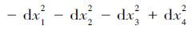

1895年，我在既未入学也无教师的情况下，跟我父母在米兰度过一年之后，我这个十六岁的青年人从意大利来到苏黎世。我的目的是要上联邦工业大学（Eidgenossische Technische Hochschule），可是一点也不知道怎样才能达到这个目的。我是一个执意的而又有自知之明的年轻人，我的那一点零散的有关知识主要是靠自学得来的。热衷于深入理解，但很少去背诵，加以记忆力又不强，所以我觉得上大学学习绝不是一件轻松的事。怀着一种根本没有把握的心情，我报名参加工程系的入学考试。这次考试可悲地显示了我过去所受的教育的残缺不全，尽管主持考试的人既有耐心又富有同情心。我认为我的失败是完全应该的。然而可以自慰的是，物理学家H.F.韦伯（Weber）让人告诉我，如果我留在苏黎世，可以去听他的课。但是校长阿耳宾·赫尔措格（Albin Herzog）教授却推荐我到阿劳（Aarau）州立中学上学，我可以在那里学习一年来补齐功课。这个学校以它的自由精神和那些毫不仰赖外界权威的教师们的淳朴热情给我留下了难忘的印象；同我在一个处处使人感到受权威指导的德国中学的六年学习相对比，使我深切地感到，自由行动和自我负责的教育，比起那种依赖训练、外界权威和追求名利的教育来，是多么的优越呀。真正的民主绝不是虚幻的空想。
在阿劳这一年中，我想到这样一个问题： 倘使一个人以光速跟着光波跑，那么他就处在一个不随时间而改变的波场之中。但看来不会有这种事情！这是同狭义相对论有关的第一个朴素的理想实验。狭义相对论这一发现绝不是逻辑思维的成就，尽管最终的结果同逻辑形式有关。
1896-1900年在〔苏黎世〕工业大学的师范系学习。我很快发现，我能成为一个有中等成绩的学生也就该心满意足了。要做一个好学生，必须有能力去很轻快地理解所学习的东西；要心甘情愿地把精力完全集中于人们所教给你的那些东西上；要遵守秩序，把课堂上讲解的东西笔记下来，然后自觉地做好作业。遗憾的是，我发现这一切特性正是我最为欠缺的。于是我逐渐学会抱着某种负疚的心情自由自在地生活，安排自己去学习那些适合于我的求知欲和兴趣的东西。我以极大的兴趣去听某些课。但是我“刷掉了”很多课程，而以极大的热忱在家里向理论物理学的大师们学习。这样做是好的，并且显著地减轻了我的负疚心情，从而使我心境的平衡终于没有受到剧烈的扰乱。这种广泛的自学不过是原有习惯的继续；有一位塞尔维亚的女同学参加了这件事，她就是米列娃·玛里奇（Mileva Maric），后来我同她结了婚。可是我热情而又努力地在H.F.韦伯教授的物理实验室里工作。盖塞（Geiser）教授关于微分几何的讲授也吸引了我，这是数学艺术的真正杰作，在我后来为建立广义相对论的努力中帮了我很大的忙。不过在这些学习的年代，高等数学并未引起我很大的兴趣。我错误地认为，这是一个有那么多分支的领域，一个人在它的任何一个部门中都很容易消耗掉他的全部精力。而且由于我的无知，我还以为对于一个物理学家来说，只要明晰地掌握了数学基本概念以备应用，也就很够了；而其余的东西，对于物理学家来说，不过是不会有什么结果的枝节问题。这是一个我后来才很难过地发现到的错误。我的数学才能显然还不足以使我能够把中心的和基本的内容同那些没有原则重要性的表面部分区分开来。
在这些学习年代里，我同一个同学马尔塞耳·格罗斯曼（Marcel Grossmann）建立了真正的友谊。每个星期我总同他去一次里马特河口的“都会”咖啡店，在那里，我同他不仅谈论学习，也谈论着睁着大眼的年轻人所感兴趣的一切。他不是像我这样一种流浪汉和离经叛道的怪人，而是一个浸透了瑞士风格同时又一点也没有丧失掉内心自主性的人。此外，他正好具有许多我所欠缺的才能： 敏捷的理解能力，处理任何事情都井井有条。他不仅学习同我们有关的课程，而且学习得如此出色，以致人们看到他的笔记本都自叹不及。在准备考试时他把这些笔记本借给我，这对我来说，就像救命的锚；我怎么也不能设想，要是没有这些笔记本，我将会怎样。
虽然有了这种不可估量的帮助，尽管摆在我们面前的课程本身都是有意义的，可是我仍要花费很大的力气才能基本上学会这些东西。对于像我这样爱好沉思的人来说，大学教育并不总是有益的。无论多好的食物强迫吃下去，总有一天会把胃口和肚子搞坏的。纯真的好奇心的火花会渐渐地熄灭。幸运的是，对我来说，这种智力的低落在我学习年代的幸福结束之后只持续了一年。
马尔塞耳·格罗斯曼作为我的朋友给我最大的帮助是这样一件事： 在我毕业后大约一年左右，他通过他的父亲把我介绍给瑞士专利局（当时还叫做“精神财产局”）局长弗里德里希·哈勒（Friedrich Haller）。经过一次详尽的口试之后，哈勒先生把我安置在那儿了。这样，在我的最富于创造性活动的1902-1909这几年当中，我就不用为生活而操心了。即使完全不提这一点，明确鉴定技术专利权的工作，对我来说也是一种真正的幸福。它迫使你从事多方面的思考，它对物理的思索也有重大的激励作用。总之，对于我这样的人，一种实际工作的职业就是一种绝大的幸福。因为学院生活会把一个年轻人置于这样一种被动的地位： 不得不去写大量科学论文——结果是趋于浅薄，这只有那些具有坚强意志的人才能顶得住。然而大多数实际工作却完全不是这样，一个具有普通才能的人就能够完成人们所期待于他的工作。作为一个平民，他的日常的生活并不靠特殊的智慧。如果他对科学深感兴趣，他就可以在他的本职工作之外埋头研究他所爱好的问题。他不必担心他的努力会毫无成果。我感谢马尔塞耳·格罗斯曼给我找到这么幸运的职位。
关于在伯尔尼的那些愉快的年代里的科学生涯，在这里我只谈一件事，它显示出我这一生中最富有成果的思想。狭义相对论问世已有好几年。相对性原理是不是只局限于惯性系（即彼此相对作匀速运动的坐标系）呢？形式的直觉回答说：“大概不！”然而，直到那时为止的全部力学的基础——惯性原理——看来却不允许把相对性原理作任何推广。如果一个人实际上处于一个（相对于惯性系）加速运动的坐标系中，那么一个“孤立”质点的运动相对于这个人就不是沿着直线而匀速的。从窒息人的思维习惯中解放出来的人立即会问： 这种行为能不能给我提供一个办法去分辨一个惯性系和一个非惯性系呢？他一定（至少是在直线等加速运动的情况下）会断定说： 事情并非如此。因为人们也可以把相对于一个这样加速运动的坐标系的那种物体的力学行为解释为引力场作用的结果；这件事之所以可能，是由于这样的经验事实： 在引力场中，各个物体的加速度同这些物体的性质无关，总都是相同的。这种知识（等效原理）不仅有可能使得自然规律对于一个普遍的变换群，正如对于洛伦兹变换群那样，必须是不变的（相对性原理的推广），而且也有可能使得这种推广导致一个深入的引力理论。这种思想在原则上是正确的，对此我没有丝毫怀疑。但是，要把它贯彻到底，看来有几乎无法克服的困难。首先，产生了一个初步考虑： 向一个更广义的变换群过渡，同那个开辟了狭义相对论道路的时空坐标系的直接物理解释不相容。其次，暂时还不能预见到怎样去选择推广的变换群。实际上，我在等效原理这个问题上走过弯路，这里就不必提它了。
1909-1912年，当我在苏黎世以及布拉格大学讲授理论物理学的时候，我不断地思考这个问题。1912年，当我被聘请到苏黎世工业大学任教时，我已很接近于解决这个问题了。在这里，海尔曼·闵可夫斯基（Hermann Minkowski）关于狭义相对论形式基础的分析显得很重要。这种分析归结为这样一条定理： 四维空间有一个（不变的）准欧几里得度规；它决定着实验上可证实的空间度规特性和惯性原理，从而又决定着洛伦兹不变的方程组的形式。在这个空间中有一种特选的坐标系，即准笛卡尔坐标系，它在这里是唯一“自然的”坐标系（惯性系）。
等效原理使我们在这样的空间中引进非线性坐标变换，也就是非笛卡尔（“曲线”）坐标。这种准欧几里得度规因而具有普遍的形式：
ds 2 =∑gik dxi dxk ,
关于下标i 和k 从1到4累加起来。这些gik 是四个坐标的函数，根据等效原理，它们除了度规之外也描述引力场。后者在这里是同任何特性无关的。因为它可以通过变换取

这样的特殊形式，这是要求一种gik 同坐标无关的形式。在这种情况下，用gik 来描述的引力场就可以被“变换掉”。一个孤立物体的惯性行为在上述特殊形式中就表现为一条（类时）直线。在普遍的形式中，同这种行为相对应的则是“短程线”。
这种陈述方式固然还是只涉及准欧几里得空间的情况，但它也指明了如何达到一般的引力场的道路。在这里，引力场还是用一种度规，即用一个对称张量场gik 来描述的。因此，进一步的推广就仅仅在于如何满足这样的要求： 这个场通过一种单纯的坐标变换而能成为准欧几里得的。
这样，引力问题就归结为一个纯数学的问题了。对于gik 来说是否存在着一个对非线性坐标变换能保持不变的微分方程呢？这样的微分方程而且只有这样的微分方程才能是引力的场方程。后来，质点的运动定律就是由短程线的方程来规定的。
我头脑中带着这个问题，于1912年去找我的老同学马尔塞耳·格罗斯曼，那时他是〔苏黎世〕工业大学的数学教授。这立即引起他的兴趣，虽然作为一个纯数学家他对于物理学抱有一些怀疑的态度。当我们都还是大学生时，当我们在咖啡店里以习惯的方式相互交流思想时，他有一次曾经说过这样一句非常俏皮而又具有特色的话（我不能不在这里引用这句话）：“我承认，我从学习物理当中也得到了某些实际的好处。当我从前坐在椅子上感觉到在我以前坐过这椅子的人所发出的热时，我总有点不舒服。但现在已经没有这种事了，因为物理学告诉我，热是某种非个人的东西。”
就这样，他很乐意共同从事解决这个问题，但是附有一个条件： 他对于任何物理学的论断和解释都不承担责任。他查阅了文献并且很快发现，上面所提的数学问题早已专门由黎曼（Riemann）、里奇（Ricci）和勒维-契维塔（Levi-Civita）解决了。全部发展是同高斯（Gauss）的曲面理论有关的，在这理论中第一次系统地使用了广义坐标系。黎曼的贡献最大。他指出如何从张量gik的场推导出二阶微分。由此可以看出，引力的场方程应该是怎么回事——假如要求对于一切广义的连续坐标变换群都是不变的。但是，要看出这个要求是正确的，可并不那么容易，尽管我相信已经找到了根据。这个思想虽然是错误的，却产生了结果，即这个理论在1916年终于以它的最后的形式出现了。
当我和我的老朋友热情地共同工作的时候，我们谁也没有想到，一场小小的疾病竟会那么快地夺去这个优秀的人物。 [2] 我需要在自己在世时至少再有一次机会来表达我对马尔塞耳·格罗斯曼的感激之情，这种必要性给了我写出这篇杂乱无章的自述的勇气。
自从引力理论这项工作结束以来，到现在四十年过去了。这些岁月我几乎全部用来为了从引力场理论推广到一个可以构成整个物理学基础的场论而绞尽脑汁。有许多人向着同一个目标而工作着。许多充满希望的推广我后来一个个放弃了。但是最近十年终于找到一个在我看来是自然而又富有希望的理论。不过，我还是不能确信，我自己是否应当认为这个理论在物理学上是极有价值的，这是由于这个理论是以目前还不能克服的数学困难为基础的，而这种困难凡是应用任何非线性场论都会出现。此外，看来完全值得怀疑的是，一种场论是否能够解释物质的原子结构和辐射以及量子现象。大多数物理学家都是不假思索地用一个有把握的“否”字来回答，因为他们相信，量子问题在原则上要用另一类方法来解决。问题究竟怎样，我们想起莱辛（Lessing） [3] 的鼓舞人心的言词： 为寻求真理的努力所付出的代价，总是比不担风险地占有它要高昂得多。
[1] 这是爱因斯坦于1955年3月（即在他逝世前一个月）为纪念他的母校苏黎世工业大学成立一百周年而写的回忆录，最初发表在1955年秋出版的《瑞士大学报》（Schweizerische Hochschulzeitung ）上。这里译自卡尔·塞利希（Carl Seelig）编的文集《光明的时代——黑暗的时代，悼念阿尔伯特·爱因斯坦》（Helle Zeit-Dunkle Zeit, in Memoriam Albert Einstein ），苏黎世，欧洲出版社，1956年版，9-17页。本文由何成钧同志译。——编译者注。
[2] M.格罗斯曼1878年4月9日生于布达佩斯，1936年9月7日病逝于苏黎世。——编译者注。
[3] 莱辛（G.E.Lessing, 1729-1781），德国的启蒙运动者、诗人和思想家。——编译者注。